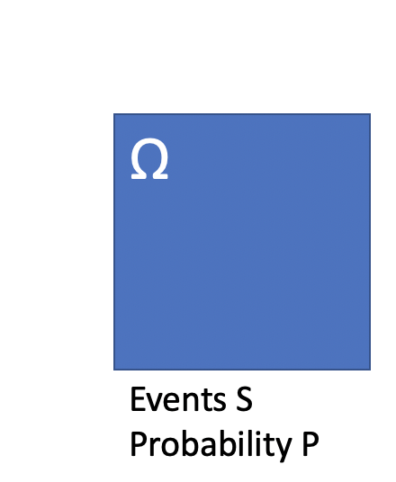
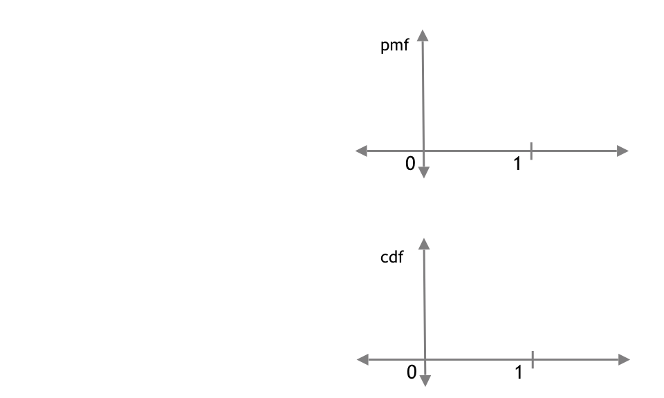
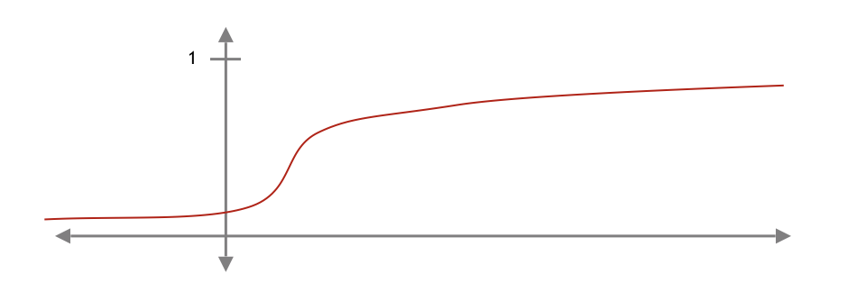
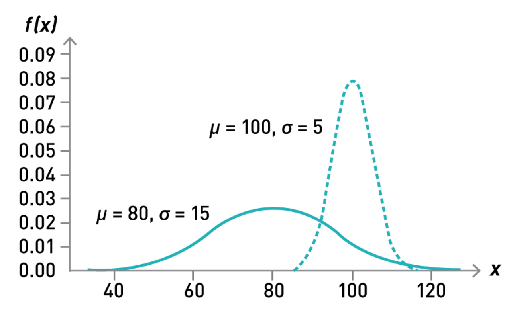
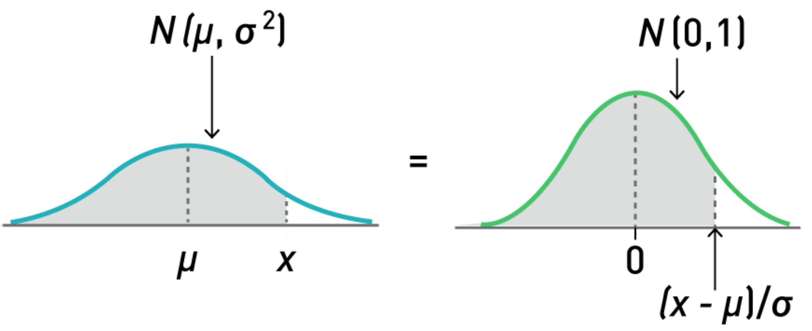
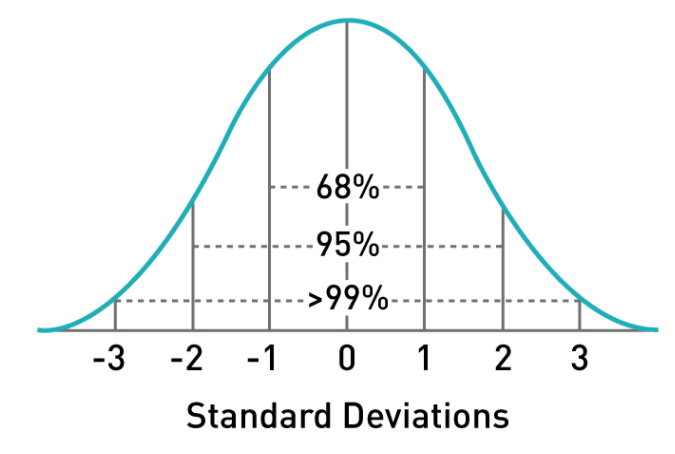
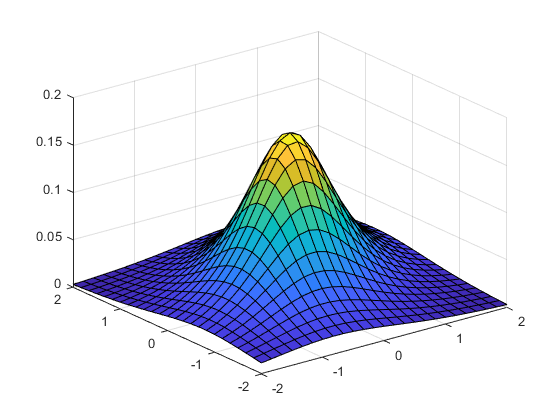

Week 2
Introduction to Probability
Introduction
Plan for the Week
Two sections:
- Defining random variables
- Joint distributions
- This is a foundation week.
- Random Variables are building blocks of statistical models.
- Thinking of the analogy with Jazz music, you’ll want your understanding of them to be rock solid.
- So we’re going to be very mathematically precise in defining what these are.
- We’ll have three sections…
Plan for the Week (cont.)
At the end of this week, you will be able to:
- Understand how random variables fit as a part of statistical modeling
- Apply the mathematical tools we have for characterizing random variables
- Solve problems by applying properties of expectation and variance
Part 1: Introducing Random Variables
What Is a Random Variable?
Intuition:
- A model for where the numbers in data come from.
- Like a regular variable but with uncertainty about its value.
Given probability space \((\Omega, S, P)\), a random variable is a measurable function from \(\Omega\) to \(\mathbb{R}\).
- A Random Variable is the fundamental building block of a statistical model, but what is it?
- Intuitively, we’re used to variables in our datasets. They have one value. But as statisticians we need a way to model variables acknowledging that different values are possible
- Finally, we have the formal definition that you’ll see in your textbook. A random variable is a function from a probability space to R. This one, unfortunately, leaves students scratching their heads. It doesn’t seem to capture the intuition.
What Is a Random Variable (Formally)?
- I’m going to try to make the formal definition make more sense. And I’ll do it by telling a very stylized story about how a variable gets the value it has.
- This story is about something I do in my spare time, which is roast coffee. It has three characters.
- The first character is my coffee roaster. This is in the actual real world. It has some state: the atoms are moving with some velocity, the proteins in the beans are in some configuration - hopefully the proteins aren’t burnt.
- Because I’m serious about my roasting, I want some data. So the second character is this thermometer. It represents measurement or observation. Think of the state of the roaster as an input to the thermometer
- The final character is the output of the thermometer: a regular old variable. 160 degrees.
What Is a Random Variable (Formally)?
- Now as statisticians, we think that there must be some randomness in that number. In other words, if you could magically rewind time and start roasting again, you might get a different number. You might not actually believe this - if we could recreate the start of the experiment EXACTLY, down to the location of atoms, maybe you think you’d get the same number. But at least as statisticians, we want a model for how this number was created that involves randomness. Here’s how we do it…
- First, we need a probability space. Each outcome in this space represents one possible state of my coffee roaster. There is a probability function that tells you how probable different states are.
- Next, we have the random variable. this is like the thermometer, but it doesn’t give us a single number. it’s a function that takes in any outcome - any state of the coffee roaster.
- Finally, the last character is the real numbers. The random variable is a function from omega to the reals.
What Is a Random Variable (Formally)?
- That’s the setup. Let’s see what happens when the experiment runs.
- First nature reaches in and selects one possible outcome. remember this represents one possible arrangement of all the atoms in my roaster.
- Use Annotation, label outcome w, draw arrow to T, draw another arrow to 160.
Probabilities of Real Numbers

- Let me give you one more way to think about random variables.
- Here is our outcome space and the real number line. The RV maps each outcome to a real number.
- Remember that we have a probability measure on Omega. It turns out that the RV creates a new probability measure on R. Here’s how: For any Set S of real numbers…
- If you know measure theory, you know that I wasn’t 100
Reading Assignment
Read Foundations of Agnostic Statistics , section 1.2.0–1.2.1.
Functions of a Random Variable
- Random variable \(T\) represents temperature in Fahrenheit, but you need Celsius.
- Random variables are building blocks. we don’t just create them, we analyze them, which means we put them into equations and apply operations to them. We create new random variables, and we create other types of mathematical objects.
- Let’s go over three basic examples, and we’ll develop some vocabulary that will help us stay organized in the future.
- We have the temperature in Fahrenheit, but need celsius
- \(f(t) = \frac{5}{9}(t-32)\)
- We take the random variable T and put it into f,
Creating Events from a Random Variable
You want to know whether the temperature is below 150.
- You want to know if the temperature is below 150. you write down T < 150. what kind of thing is this? It’s an event! Let’s draw the picture…
Operators Applied to a Random Variable
You want to know the minimum possible temperature.
- you write down min
- \(min[T] = min_{\omega \in \Omega} T(\omega)\)
- min is a function, but it’s not a function from R to R like we had earlier. it takes any random variable as input and outputs a number. We have a special name for this: Operator. We use square brackets for operators
important operator, the expectation, which is like the mean for random variables.The min is not a very useful operator, but soon we'll see a very
Learnosity: Roaster Temperature
Suppose \(T\) is a random variable representing the temperature of a roaster.
What kind of object is each of the following?
- \(g(T)\) where
\(g(t) = \begin{cases} 1, & t<150\\ 0, &\text{otherwise} \end{cases}\) . Answer: random variable
\(R\) such that \(R[T] = P(T>150)\) . Answer: operator
\(T < (5/9)(T-32)\) . Answer: event
- Three questions, each with three MC answers: (Event, Random Variable, Operator).
Reading Assignment
Read Foundations of Agnostic Statistics , section 1.2.2.
Introducing Discrete Random Variables
A random variable \(X\) is discrete if its range,
\(X(\Omega) \in \R\) , is a countable set.
- \(X(\Omega)\) can be finite. - A roll of a die: \(\{1,2,3,4,5,6\}\)
- \(X(\Omega)\) can be countably infinite. - Edits to an article: \(\{0,1,2,3...\}\)
- Random variables are quite flexible objects.
- We’ve been using the full definition based on a probability measure, and that’s a powerful idea - it can model many different things, but it’s not the easiest definition to work with.
- Luckily, as statisticians, we usually don’t need all that power. That’s because the random variables we care about normally belong to two special classes: discrete and continuous.
- You might guess the range is a discrete set in
The Bernoulli Distribution
A Bernoulli trial is a simple (but important) discrete random variable.
- It can represent: - a coin flip
- a decision to buy or not to buy
- success or failure of experiment
- Convention: 1 represents success, 0 failure
- \(\Omega = {H,T}\)
- \(P(H) = p\)
- Let
- \(P(X=1) = p\)
The Probability Mass Function (PMF)
A function that gives the probability that a discrete random variable equals each number in \(\R\) - \(f_X(x) = P(X = x)\)
- sketch the probability distribution for the Bernoulli trial
- write out pdf with cases
Key Properties of the PMF
For a discrete random variable \(X\) with pmf \(f\),
- For all \(x \in \R\) , \(f(x) \geq 0\) .
- \(\sum_{x \in X(\Omega)} f(x) = 1\) .
- \(f(x) = P(X=x)\)
- \(\sum_{x \in X(\Omega)} P(X=x) = P( \cup_{x \in X(\Omega)}(x = X) ) = P(x \in X(\Omega)) = 1\)
- Hopefully you find these intuitive. The values of
- So not surprising, but these are great sanity checks. My advice is that when you need to answer a question with a pmf, you check these two things.
Computing Other Event Probabilities from the PMF
For a discrete random variable \(X\) with pmf \(f\), if \(D \subseteq \R\), \(P(X \in D) = \sum_{x \in X(\Omega) \cap D } f(x).\)
Take-away: The pmf contains all the information about the probability distribution of \(X\) .
Reading Assignment
Read Foundations of Agnostic Statistics , section 1.2.3.
The Cumulative Distribution Function

The Cumulative Distribution Function (Solution)
- You already know that a PMF fully describes the distribution of a discrete random variable.
- There is another tool that’s really important for describing distributions, and that’s the CDF
- I have to admit, when you’re learning, the CDF is less intuitive than the PMF. but there is one big advantage.
- The CDF completely specifies the distribution of ANY RV, not just a discrete one. It doesn’t place any assumptions on the random variable. so we like to write theorems that use the CDF, because those are as general as possible.
Motivation for Continuous Random Variables
- Let’s say you’re studying a rare species of giant squid. I ask you, what’s the probability that a specimen is exactly 6 meters long?
- You might estimate that maybe 20
- But my question is what’s the probability that a squid is exactly 6 meters.
- To within 1 mm? to within 1 nanometer?
- You can quickly see that the probability of 6 meters with zero error is actually
Motivation for Continuous Random Variables
- There are a lot of other variables that also take on a continuum of values.
- force until a piece of equipment breaks,
Motivation for Continuous Random Variables
- time between customer visits
Motivation for Continuous Random Variables
- temperature of a coffee roaster…
- How do we model these situations as statisticians?
- We could pretend that they are discrete. Or we could focus on what we measure with our instrument. Since we have finite precision, the set of numbers we can write down is countable. But that might feel like cheating, and in any cse, it actually makes the math really complicated. Instead, we prefer to use what we call continuous random variables..
The Probability Density Function
- The core idea behind continuous random variables is a probability density function
- The purpose is to show how probability is spread out over the range of possible values
- The probability of any one point is zero
- But if you have a range, what you do is you integrate under the density to get the probability
- Draw interval and indicate area….
- This gives us a principled way to talk about probabilities over a continuum of values
Reading: Continuous Random Variables
Read Foundations of Agnostic Statistics , section 1.2.4.
Continuous Random Variables
A random variable \(X\) is continuous if there exists a non-negative function \(f:\R \rightarrow \R\) such that the cdf of \(X\) is \(F(x) = \int_{-\infty}^x f(u) du \text{, for all } x \in \R\)
- How do we define a continuous random variable? It’s a random variable that has a probability density function
- We know that every random variable has a CDF. for a continuous random variable, the pdf determines the cdf. How do you get the CDF from the pdf?
- The CDF at some point x, is the probability the RV is less than or equal to x.
- How do we get that? we integrate from -infinity to x
Characterizing Continuous Random Variables
For a continuous random variable with cdf \(F\), the probability density function of \(X\) is \(f(x) = \frac{dF(u)}{du} \Bigg|_{u=x} \text{, for all } x \in \R\)

- If you take an integral to get from the pdf to CDF, how do you go the other way?
- This is really just the fundamental theorem of calculus: take a derivative.
- think about the the cdf at some point x, this is
- Then move to the right by some tiny dx. the cdf now represents
- So the difference is just
- That’s how quickly we’re adding in probability. If we divide by the width of the rectangle, we get the slope, and that’s exactly the probability density.
Characterizing Continuous Random Variables (cont.)
For a continuous random variable \(X\) with pdf \(f\), 1. For all \(x\in \R\) , \(f(x) \geq 0\) . 2. \(\int_{-\infty}^\infty f(x)dx = 1\) .
- Here are two important properties of pdfs.
- Use these as sanity checks. when you write down a pdf, see if these properties hold.
- If they don’t, you’ve done something wrong.
Support
For a random variable \(X\) with pmf or pdf \(f\), the support of \(X\) is \(\text{Supp}[X] = \{x \in \R : f(x) > 0 \}\)
- This will be helpful when we discuss continuous distributions. we’ll usually assume we’re in the support, because we don’t want to divide by zero.
Uniform Random Variables
Note: This is a placeholder for a video that we’re going to re-use from: Use the old video 3.9 Uniform Random Variables - only the start through 6.12, before I start talking about expectation.
Use the old video 3.10 The Normal Distribution
The Normal Distribution
The most important distribution in statistics - The variables measured don’t always come directly from a normal distribution - Human height has a close-to-normal distribution–so do anthropometric measurements on fossils, reaction times in psychological experiments, etc. - Most variables deviate from a normal distribution - We’ll see how the normal distribution pops up as a consequence of basic mathematical laws - A famous theorem is the Central Limit Theorem . Many of our statistical tests depend on this theorem, and it tells us when certain distributions will approach a normal distribution
The Normal Distribution equation
A continuous rv \(X\) is said to have a normal distribution with parameters \(\mu\) and \(\sigma\) (or \(\mu\) and \(\sigma^{2}\) ), where \(-\infty < \mu < \infty\) and \(0 < \sigma\) , if the pdf of \(X\) is:
\[\begin{equation} f(x; \mu, \sigma) = \frac{1}{\sqrt{2\pi\sigma^{2}}} e^{-(x-\mu)^{2}/(2\sigma^{2})}, -\infty < x < \infty \end{equation}\]
This is the equation for the density function of a normal distribution
The Normal Distribution equation
\[\begin{equation} f(x; \mu, \sigma) = \frac{1}{\sqrt{2\pi\sigma^{2}}} e^{-(x-\mu)^{2}/(2\sigma^{2})}, -\infty < x < \infty \end{equation}\] - There are two parameters, \(\mu\) and \(\sigma\) - There is an entire family of normal distributions - It can be shown that \(E(x)=\mu\) and \(V(X)=\sigma^{2}\) , so the parameters are the mean and the standard deviation of \(X\) - The statement that \(X\) is normally distributed with parameters \(\mu\) and \(\sigma^{2}\) is often abbreviated \(X \sim N(\mu, \sigma^{2})\)
Normal Curve Examples

- These are normal curves with different \(\mu\) and \(\sigma\) - Each curve is symmetric around its mean - \(\mu\) is both the mean and the median, changing it moves the curve left or right - \(\sigma\) is also called the scale parameter, since it stretches the curve horizontallyThe Standard Normal Distribution
- Often, we need to select one representative distribution out of the normal family
- Typically, we choose \(\mu=0\) and \(\sigma=1\) - This is called the standard normal distribution , also called a z-distribution
- It is also denoted by a capital Z
- We can write the pdf of Z:
\[\begin{equation} f(z; 0, 1)= \frac{1}{\sqrt{2\pi}}e^{-z^{2}/2}, -\infty < X < \infty \end{equation}\] - The cumulative distribution of Z is often written as \(\phi(z)\)
Standardizing a Normal Variable
- Suppose we have a normal variable that is not standard normal \(X \sim N(\mu, \sigma^{2})\) - We want to simplify our computations
- We can compute the random variable \((X-\mu) / \sigma\) - This new variable has a standard normal distribution
- This can make it easier to perform tests using the variable
- Any probabilities involving \(X\) can be expressed in terms of areas under the z-distribution
Standardizing a Normal Variable (cont.)
These are easy to compute in statistical software

Properties of the Normal Distribution

This picture shows certain areas under a normal curve
- 68 % of the area is within 1 standard deviation of the mean
- 95 % is within 2 standard deviations
- 99.7 % is within 3 standard deviations
Properties of the Normal Distribution (cont.)
Part 2: Joint Distributions
Introducing Joint Distributions
- Suppose that you’re consulting for a car dealer to build a statistical model of a customer – ``Will this customer buy a car?
- You begin by defining a random variable \(B\) , that takes the value \(B=1\) if the customer buys, and \(B=0\) if they don’t.
- Without any additional informaiton, your best guess is no better than the historical average sales – and the dealer already has that! You need to do better to be valuable. - Number of test drives
- Size of family
- No problem! Just make new random variables!
Introducing Joint Distributions
- Because we have this separate probabiliity space, it’s easy to define a new random variable D, that maps from
- One way to look at this is we have Probability Measure P over the sample space. Through these random variables, you could show that this induces a probability measure over
- We’re going to spend a lot of time working with sets of random variables to do a variety of useful things. But right now, we’re really starting with just the basics - what are ways of defining and describing joint distributions?
Reading Assignment
Read Foundations of Agnostic Statistics , section 1.3–1.3.1.
Equality of Random Variables
Let $X$ and $Y$ be random variables. Then, $X = Y$ if, for all
$\omega \in \Omega, X(\omega) = Y(\omega)$.Don’t assume \(X=Y\) just because:
- \(X\) and \(Y\) have the same distribution - \(X=1\) if Paul’s coin lands heads, 0 otherwise
- \(Y=1\) if Alex’s coin lands heads, 0 otherwise
- \(f_X = f_Y\) but \(X \neq Y\)
- \(P(X=Y) = 1\) - \(X=1\) if Paul climbs Half Dome, 0 otherwise
- \(Y=1\) if Alex climbs El Capitan, 0 otherwise
- \(P(X=Y) = 1\) but \(X \neq Y\)
- Before the book gets to joint distributions, it starts with a bit of a tangent - when are two random variables equal?
- This is really a warning. It’s easy to be careless and write down
- For example, two variables are not equal just because they have the same distribution.
- Say X is a Bernoulli representing fair coin number 1, and Y is a Bernoulli representing fair coin number 2. They have the same distribution, but they are not equal because for some outcomes one will be 1 and one will be 0.
- EVEN if
- Let’s say you and I get identical contracts to go hunt for a new specimen of giant squid. But I get an extra contract that said I get a million dollars extra if the squid we discover is exactly 6 meters. the probability that that happens is zero, but as a technical matter, the random variables are not equal.
The Joint PMF and Car Dealers
\(f(b,d) = P(B=b, D=d)\)
- Let’s go back to our car dealer example. Remember that B represents whether the customer buys and D the number of cars the customer test drives
- The joint pmf is a function that tells us the probability of every possible combination of B and D.
- If we have just a few outcomes, it can be convenient to list the probabilities in a table
The Joint PMF and Car Dealers (cont.)
% \alex{Does 2U course services have a nice 3d set of axes with a% transparent background?}
- Here’s one example of what that table might look like.
- What does the pmf look like? if this is the B-D plane, the pmf is zero almost everywhere.
- I can mark a set of points, which are the outcome set, where there is a spike that comes out of the plane. For example, there is some probability that the customer buys after 2 test drives.
- This type of graph is not very helpful to use, I just want you to get the picture in your mind
The Joint Cumulative Probability Function
\(F(b,d) = P(B \leq b, D \leq d)\) - Recall that \(F_{X}(x) = \int_{-\infty}^{x}f(x)\) relates the CDF and PDF for the single variable case. - In a similar way: \(F_{Y,X} = \int_{-\infty}^{x} \int_{-\infty}^{y}f(y,x) dy dx\) - This can be hard to work with but can describe any random variables.
- Just like for one random variable, we can define a cumulative probability function for 2 or more random variables.
- For almost everything, this is an inconvenient way to work with random variables
- There is one giant advantage - this works to describe any random variables, discrete, continuous, or mixed.
- So probability theorists want to prove things using CDFs because that makes the results universal.
Learnosity: The Probability Mass Function
Suppose that \(X_1\) is a Bernoulli random variable representing a fair coin. Suppose that \(X_2\) is a Bernoulli random variable representing a second fair coin. Let \(Y = X_1 + X_2\) .
Fill in the following table for the PMF of \(X_1\) and \(Y\) .
Reading Assignment
Read Foundations of Agnostic Statistics , section 1.3.2.
Marginal vs. Joint Distributions
Let’s go back again to our car dealer example
You’ve created a customer model with two random variables: B for the Buy decision and D for number of cars taken for a test drive.
If you think about it, you already have three ways to view this model
These are discrete random variables, so you can fully describe their joint distribution with a joint pmf
But also, you may want to look at each one individually
Suppose that the inventory department comes to you and says they need to understand just the buy decision, B
Well, there’s no reason you can’t study B by itself. We know from earlier that we can describe B with a one dimensional probability mass function
In this context, we would call that B’s marginal distribution.
So we have three pmf’s, and it’s important to understand how they are related to each other.
From Joint to Marginal Distributions
\(f_B(b) = P(B=b) = \sum_{d \in \text{Supp}[D]} f(b,d) \text{ for all } b \in \R\)- The book has this theorem that tell us how to go from a joint distribution to a marginal distribution
- The first thing to notice is that to get the marginal distribution of B, we take a sum over all values of D
- Let’s see how that works in this table. We want the probability that the customer buys a car,
- What do we do? we have to sum up all the table cells that correspond to
- I’ll write the sum down here - in the margin (that’s why this is called the marginal distribution!)
- similarly, we can find the probability that the customer doesn’t buy,
From Marginal to Joint Distributions?
Is it possible to compute the joint distribution, \(f\) , given the marginals \(f_B\) and \(f_D\) ?- Let me do the first, then take 30 seconds to think about it, then click play again. (unless it’s worth turning into a learnosity quiz? but really just a brain teaser, we haven’t taught students how to think about this.
- the answer is no. there is much more information in the joint distribution.
- In statistics, we have what are called degrees of freedom, which are like the dimensions along which the numbers can change. If you look at
- If you need more convincing, here are two different joint distributions that have the same marginals.
From Marginal to Joint Distributions? (cont.)
Two joint distributions with the same marginals:
The Conditional PMF
- Given two test drives ( \(D = 2\) ), what does the model say about buying behavior ( \(B\) )?
- What is the conditional pmf, \(f_{B|D}\) ?
- Let’s go back again to the car dealer example. You have modeled the joint distribution of the Buy decision B and the number of test drives D.
- Now a dealer comes to you and says that they have a customer that test drove 2 cars. They want to know, according to your model, what probabilities to assign to buy and not buy.
- Since we know
- but there’s a problem. this is not a probability distribution, because the sum is not 1.
- So, the solution is that we remember that probabilities are ratios, so we have to divide these by their total. by the way, their total is exactly the marginal probability here - 0.3. when we divide then, we get 1/3 and 2/3.
The Conditional PMF (cont.)
\[\begin{align*} f_{B|D}(b|d) & = P(B=b | D=d) \\ &= \frac{P(B=b, D=d)}{P(D=d)} = \frac{f(b,d)}{f_D(d)} \end{align*}\]
\(\text{conditional} = \frac{\text{joint}}{\text{marginal}} \Leftrightarrow \pause \text{joint} = \text{marginal} \cdot \text{conditional}\)
- Here’s the theorem from the book
- We want the conditional distribution at some point b, given little d. This is a conditional probability, that B=b, given D = d. we use the definition of conditional prob to write this as a fraction. then notice that we have the joint distribution over the marginal.
- These are really just distributional versions of the multiplication rule we saw for events
Reading Assignment
Read Foundations of Agnostic Statistics , section 1.3.3.
The Joint Density Function

- Let’s take a look at joint distributions for continuous random variables
- Before we saw that when random variables are discrete, we can describe them with a joint pmf. now we need a joint density function
- When you imagine a joint density, think about a surface.
- The higher the surface in an area, the more probability you have there
- Working with densities is a little less intuitive, but luckily, most of what we have to do is remember what we did for discrete random variables, and turn the sums into integral
Probabilities of Events
- The first thing we might want to do is compute the probability that (X,Y) is in some set. - Let’s draw some set D on the X-Y plane
- When we had discrete random variables, we summed up the pmf for all points in that set.
- Now we have to take an integral over that area
- \(P((X,Y) \in D) = \int\int_{(x,y) \in D} f(x,y) dx dy\)
Continuous Marginal Distributions
Next, how do we compute a marginal distribution?
Let’s choose a specific X,
Now that X defines a slice through this surface
Instead of a sum, now we take an integral of that slice..
That will give us the value of the marginal density of X at that x.
\(f_X(x) = \int_{-\infty}^\infty f(x,y) dy\)
Continuous Conditional Distributions
\(\text{conditional} = \frac{\text{joint}}{\text{marginal}}\)
- Finally, how do we compute a conditional distribution?
- Let’s choose a specific X,
- So the shape of the slice tells us exactly how probable one value of y is compared to another
- But just like for discrete random variables, we have to scale things to make sure the total probability is 1.
- \(f_{B|D}(b|d) = \frac{f(b,d)}{f_D(d)}\)
- So this equation is exactly the same as before! but now these are densities instead of probability masses.
Reading Assignment
Read Foundations of Agnostic Statistics , section 1.3.4.
Independence
If \(X\) and \(Y\) are independent, \(X \indep Y\) .
- The marginals fully describe the distribution: \(f(x,y) = f_X(x)f_Y(y)\)
- Knowing X tells you nothing about Y: \(f_{Y|X}(y|x) =\)
- Independence is a key property that we will use again and again in this course
- First, let’s look at the definition…
Drawing Independent Continuous RV
- Draw a normal curve in two dimensions, but linear in one.
Drawing Non-Independent Continuous RV
- Draw a normal curve in two dimensions
Importance of Independence
\(B_1\) represents blood pressure of patient 1.
\(B_2\) represents blood pressure of patient 2.
Without simplifying assumptions, the joint distribution of
\(B_1, B_2,...\) is too complex to estimate with limited data.
Independence \(\implies\) only need to estimate the marginals
- The reason independence is so important will come when we try to fit our models to data
- we’ll see how this process works when we get to estimators.
Assessing Independence in Practice
Independence is rarely (if ever) perfectly met.
What if:
Patient 1 and patient 2 are related
Technicians trade off every 10 patients
After seeing an unusually high blood pressure, the technician adjusts their mannerisms
These are potential dependencies .
- Remember, there will almost always be some. It’s important to identify them. But you must exercise judgement about which are really important and which are minor.